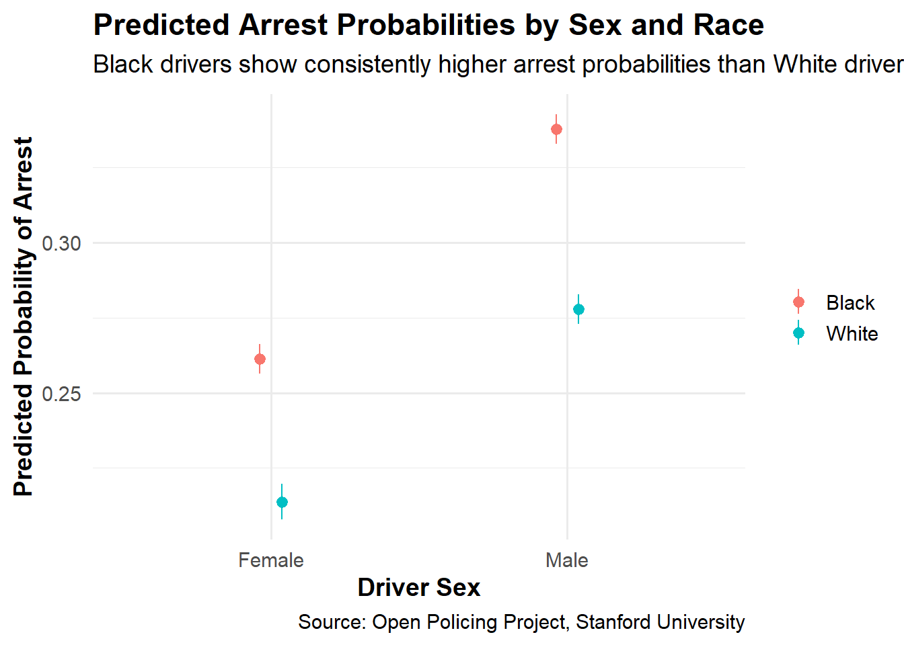

Stops
We examine traffic stops across the United States and how race may vary in the arrest rate to improve police accountability and transparency. Using data from the Open Policing Project by Standford University, we attempt to see what the difference in arrest rate between Black and White drivers are while adjusting for other covariates. A potential weakness in our model is that the dataset removed almost 3.1 million entries from the real data, reducing it to only about 400,000 entries, this deletion of the entries may lead to a misrepresentation of the population, as the possibility exists that the remaining/current data is only from select areas with selected and specific conditions present, and could be from biased officers who are more likely to arrest drivers compared to other officers in the zone. We model the probability of being arrested during a traffic stop (arrested vs. not arrested) as a logistic function of driver sex, race, and the zone of the stop, including interactions between race and zone. The predicted probability of arrest for Black male drivers is about 0.33 (95% CI: 0.32–0.34), which is nearly 6 percentage points higher than that for White male drivers in similar zones.
This is my data generating mechanism : \[ \widehat{\text{arrested}} = 0.177 + 0.0614 \cdot \text{sex}_{\text{Male}} - 0.0445 \cdot \text{race}_{\text{White}} + 0.0146 \cdot \text{zone}_{\text{B}} + 0.00610 \cdot \text{zone}_{\text{C}} + 0.0781 \cdot \text{zone}_{\text{D}} + 0.00190 \cdot \text{zone}_{\text{E}} - 0.00271 \cdot \text{zone}_{\text{F}} + 0.0309 \cdot \text{zone}_{\text{G}} + 0.0757 \cdot \text{zone}_{\text{H}} + \text{(interaction terms for race and zone)} \]
| Model Estimates with Confidence Intervals | |||
|---|---|---|---|
| Logistic regression on arrest probability | |||
| Variable | Estimate | Lower CI | Upper CI |
| (Intercept) | −1.529 | −1.565 | −1.494 |
| sexMale | 0.365 | 0.346 | 0.385 |
| raceWhite | −0.263 | −0.298 | −0.228 |
| zoneB | 0.072 | 0.024 | 0.120 |
| zoneC | 0.049 | 0.008 | 0.091 |
| zoneD | 0.490 | 0.451 | 0.528 |
| zoneE | 0.029 | −0.015 | 0.073 |
| zoneF | −0.046 | −0.092 | 0.001 |
| zoneG | 0.196 | 0.150 | 0.243 |
| zoneH | 0.423 | 0.378 | 0.468 |
| zoneI | 0.149 | 0.107 | 0.192 |
| zoneJ | 0.112 | 0.064 | 0.159 |
| zoneK | 0.290 | 0.244 | 0.336 |
| zoneL | −0.038 | −0.090 | 0.014 |
| zoneM | 0.170 | 0.115 | 0.224 |
| zoneN | −0.044 | −0.122 | 0.033 |
| zoneO | 0.121 | 0.055 | 0.188 |
| zoneP | 0.095 | 0.019 | 0.170 |
| zoneQ | 0.023 | −0.032 | 0.077 |
| zoneR | 0.046 | −0.020 | 0.111 |
| zoneS | 0.311 | 0.239 | 0.383 |
| zoneT | 0.037 | −0.019 | 0.094 |
| zoneU | 0.073 | 0.021 | 0.125 |
| zoneV | 0.384 | 0.302 | 0.466 |
| zoneW | 0.537 | 0.372 | 0.699 |
| zoneX | 0.115 | 0.045 | 0.185 |
| zoneY | 0.220 | 0.138 | 0.302 |
| sexMale:raceWhite | −0.018 | −0.058 | 0.022 |